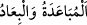
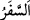
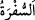

19. Bunun üzerine: “Ey Rabbimiz! Aralarında yolculuk yaptığımız şehirlerin
arasını uzaklaştır” dediler ve kendilerine yazık ettiler. Biz de onları, ibret kıssaları
haline getirdik ve onları büsbütün parçaladık. Şüphesiz bunda, çok sabreden ve çok
şükreden herkes için ibretler vardır.
“Bunun üzerine: “Ey Rabbimiz! Aralarında yolculuk yaptığımız şehirlerin arasını
uzaklaştır” dediler”
“__WORD__ birisinden uzaklaşmak ve birini uzaklaştırmaktır. “__WORD__ (yolculuk)”,
hazarın aksidir. Aslında örtüyü açmaktır. Yolculukta kişi mekandan mekan da kişiden
ayrılıp uzaklaştığı için bu kelimenin müfâale babındaki hâli (__WORD__) kullanılır. “__WORD__
lafzından sefer yemeği için olan “__WORD__ (sofra)” kelimesi türetilmiştir. Bunun bir sebebi
de bunun için yere yuvarlak bir deri serilmesinden dolayıdır. Bazıları der ki:
“İnsanların ahlâkını, kişilerin iddiâlarını ve gizli hallerini açıp ortaya koyduğu için
yolculuğa “sefer” denilmiştir.
Ehl-i tefsir der ki: Sebe halkı nimete karşı şımardılar. Bu güzel hayattan onlara bir
usanç ve bıkkınlık geldi. Afiyet ve huzurdan yoruldular da İsrâiloğulları’nın bıldırcın ve
bal yerine sarımsak ve soğan istedikleri gibi zahmet ve meşakkat istediler.
“Bahçelerimizin mahsulleri daha uzak olsaydı, onları daha çok canımız çekerdi.”
dediler. Allah’tan kendileri ile Şam arasında çöller ve çorak araziler yaratmasını
istediler. Bunu da bu bölgede binitlere binmek, yanlarına azık ve nevâlelerini almak ve
oradaki fakirlere ululuk taslamak için taleb ettiler.
Zenginler yoksullara hased ettiler: “Bizimle onlar arasında yolculukta hiç bir fark yok.
Yaya ve müflis bu yolu, atlı ile zenginin gittiği gibi gidiyor.” dediler. Onlardan zengin
olanlar dediler ki: “Ey Rabbimiz! Bizim seferlerimizin konaklarının arasını uzaklaştır.
Yâni bir konak ile diğer konak arasına çöller kıl da azığı ve yolluğu olmayan insanlar
yolculuk yapamasınlar.” Allah Teâlâ onların bu duâ ve dileklerine hemen icâbet etti.
Yemen ile Şam arasındaki bayındır yerleri harap edip hiçbir çağıranın ve cevap verenin
duyulmadığı ıssız çöller haline getirdi.
Mesnevî’de der ki:
Sebeliler genç ve toy kimselerdi.
Onların işi uluların nimetine nankörlük etmekti.
Nankörlüğe bir örnek:
Sana iyilik edenle kavgaya tutuşursun.
Dersin, bana iyilik etmemelisin.
Ben bundan rahatsızım. Beni niçin rahatsız ediyorsun?
Lütfedip bu iyiliği uzak tut benden.